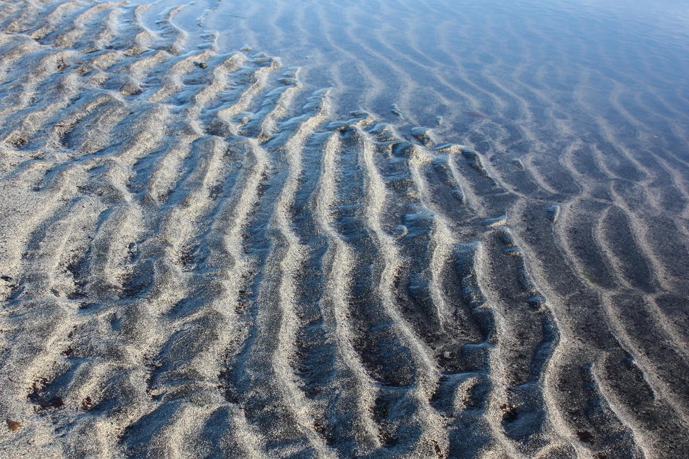

Landslag II

Musescore score with tabs
The Score (and tabs) to go along with the diagrams below is available
here.
Some notes about the piece
- The piece is minimalistic and is in 9/8 (nine eighth notes per bar)
- Each bar has a triplet repeated three times, played as an ascending argeggio.
- The bass note of each triplet is played on the bass side,
the remaining two notes are played on the melody side.
- Lends itself well to be a warmup or practice piece.
Per measure fretboard diagrams